School ID: 202355517 Name: 권민규
이번 Homework는 20점입니다.
#include <stdio.h>
int mydivide(int, int);
int main() {
int x = 5, y = 2;
printf("%d\n", mydivide(x, y));
x = 3; y = 0;
printf("%d\n", mydivide(x, y));
return 0;
}
int mydivide(int a, int b) {
return a / b;
}
코드를 컴파일한 뒤 그대로 실행했다.
gcc -o main -ggdb main.c && ./main
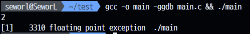
부동소수점 예외를 내뱉는다. 특히 주로 0으로 나누기 연산을 할 때 주로 발생하는 오류다.
gdb ./main
run
where
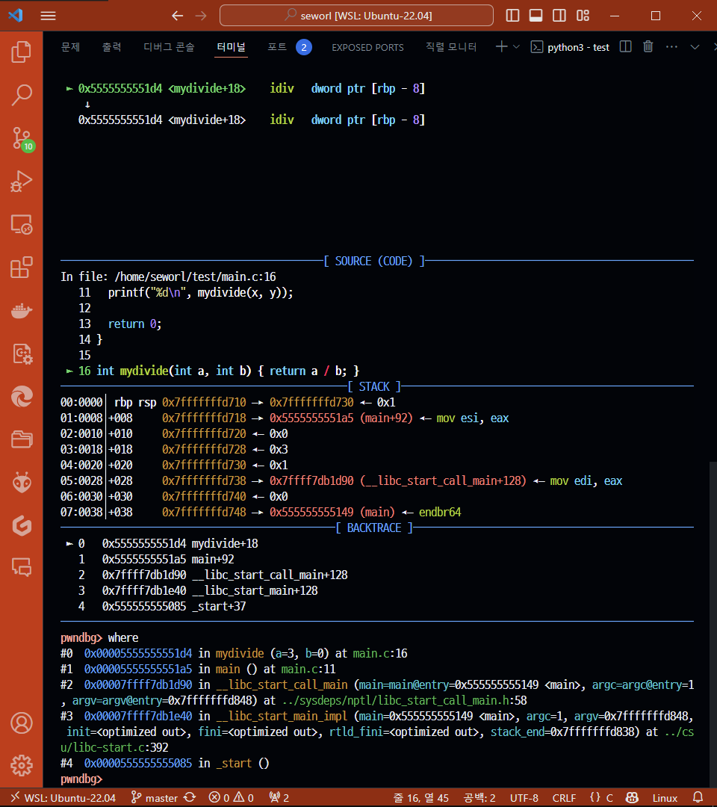
pwndbg 플러그인이 설치되어있어 약간의 CUI에 차이가 발생한다. 전체 결과는 아래와 같다.
pwndbg> run
Starting program: /home/seworl/test/main
[Thread debugging using libthread_db enabled]
Using host libthread_db library "/lib/x86_64-linux-gnu/libthread_db.so.1".
2
Program received signal SIGFPE, Arithmetic exception.
0x00005555555551d4 in mydivide (a=3, b=0) at main.c:16
16 int mydivide(int a, int b) { return a / b; }
LEGEND: STACK | HEAP | CODE | DATA | RWX | RODATA
──────────────────────────[ REGISTERS / show-flags off / show-compact-regs off ]──────────────────────────
*RAX 0x3
RBX 0x0
*RCX 0x1
RDX 0x0
*RDI 0x3
RSI 0x0
R8 0x0
*R9 0x5555555592a0 ◂— 0xa32 /* '2\n' */
*R10 0x77
*R11 0x246
*R12 0x7fffffffd848 —▸ 0x7fffffffdb46 ◂— '/home/seworl/test/main'
*R13 0x555555555149 (main) ◂— endbr64
*R14 0x555555557dc0 (__do_global_dtors_aux_fini_array_entry) —▸ 0x555555555100 (__do_global_dtors_aux) ◂— endbr64
*R15 0x7ffff7ffd040 (_rtld_global) —▸ 0x7ffff7ffe2e0 —▸ 0x555555554000 ◂— 0x10102464c457f
*RBP 0x7fffffffd710 —▸ 0x7fffffffd730 ◂— 0x1
*RSP 0x7fffffffd710 —▸ 0x7fffffffd730 ◂— 0x1
*RIP 0x5555555551d4 (mydivide+18) ◂— idiv dword ptr [rbp - 8]
───────────────────────────────────[ DISASM / x86-64 / set emulate on ]───────────────────────────────────
► 0x5555555551d4 <mydivide+18> idiv dword ptr [rbp - 8]
↓
0x5555555551d4 <mydivide+18> idiv dword ptr [rbp - 8]
────────────────────────────────────────────[ SOURCE (CODE) ]─────────────────────────────────────────────
In file: /home/seworl/test/main.c:16
11 printf("%d\n", mydivide(x, y));
12
13 return 0;
14 }
15
► 16 int mydivide(int a, int b) { return a / b; }
────────────────────────────────────────────────[ STACK ]─────────────────────────────────────────────────
00:0000│ rbp rsp 0x7fffffffd710 —▸ 0x7fffffffd730 ◂— 0x1
01:0008│+008 0x7fffffffd718 —▸ 0x5555555551a5 (main+92) ◂— mov esi, eax
02:0010│+010 0x7fffffffd720 ◂— 0x0
03:0018│+018 0x7fffffffd728 ◂— 0x3
04:0020│+020 0x7fffffffd730 ◂— 0x1
05:0028│+028 0x7fffffffd738 —▸ 0x7ffff7db1d90 (__libc_start_call_main+128) ◂— mov edi, eax
06:0030│+030 0x7fffffffd740 ◂— 0x0
07:0038│+038 0x7fffffffd748 —▸ 0x555555555149 (main) ◂— endbr64
──────────────────────────────────────────────[ BACKTRACE ]───────────────────────────────────────────────
► 0 0x5555555551d4 mydivide+18
1 0x5555555551a5 main+92
2 0x7ffff7db1d90 __libc_start_call_main+128
3 0x7ffff7db1e40 __libc_start_main+128
4 0x555555555085 _start+37
──────────────────────────────────────────────────────────────────────────────────────────────────────────
pwndbg> where
#0 0x00005555555551d4 in mydivide (a=3, b=0) at main.c:16
#1 0x00005555555551a5 in main () at main.c:11
#2 0x00007ffff7db1d90 in __libc_start_call_main (main=main@entry=0x555555555149 <main>, argc=argc@entry=1, argv=argv@entry=0x7fffffffd848) at ../sysdeps/nptl/libc_start_call_main.h:58
#3 0x00007ffff7db1e40 in __libc_start_main_impl (main=0x555555555149 <main>, argc=1, argv=0x7fffffffd848, init=<optimized out>, fini=<optimized out>, rtld_fini=<optimized out>, stack_end=0x7fffffffd838) at ../csu/libc-start.c:392
#4 0x0000555555555085 in _start ()
위에서 main 함수에서 두 번쨰로 mydivide를 호출하는 부분에서 오류가 발생했으므로, breakpoint를 설정하고 변수를 확인해준다.
b main.c:11
run
info locals
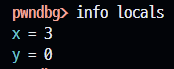
y값이 0이기 때문에 mydivide 함수에서 0으로 나누기 연산을 수행하며 오류를 뱉게 된다. y값의 주소를 확인해준다.
print &y
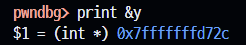
#include <stdio.h>
void myInt(int*, int);
int main() {
int a;
myInt(&a, 10);
printf("a: %d\n", a);
int* b;
myInt(b, 10);
printf("b: %d\n", *b);
return 0;
}
void myInt(int* ip, int i) {
*ip = i;
}
코드를 컴파일한 뒤 그대로 실행했다.
gcc -o main -ggdb main.c && ./main
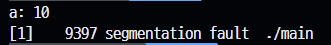
segmentation fault가 뜬다.
구체적인 실행 방법은 1번 문제와 동일하므로 생략한다.
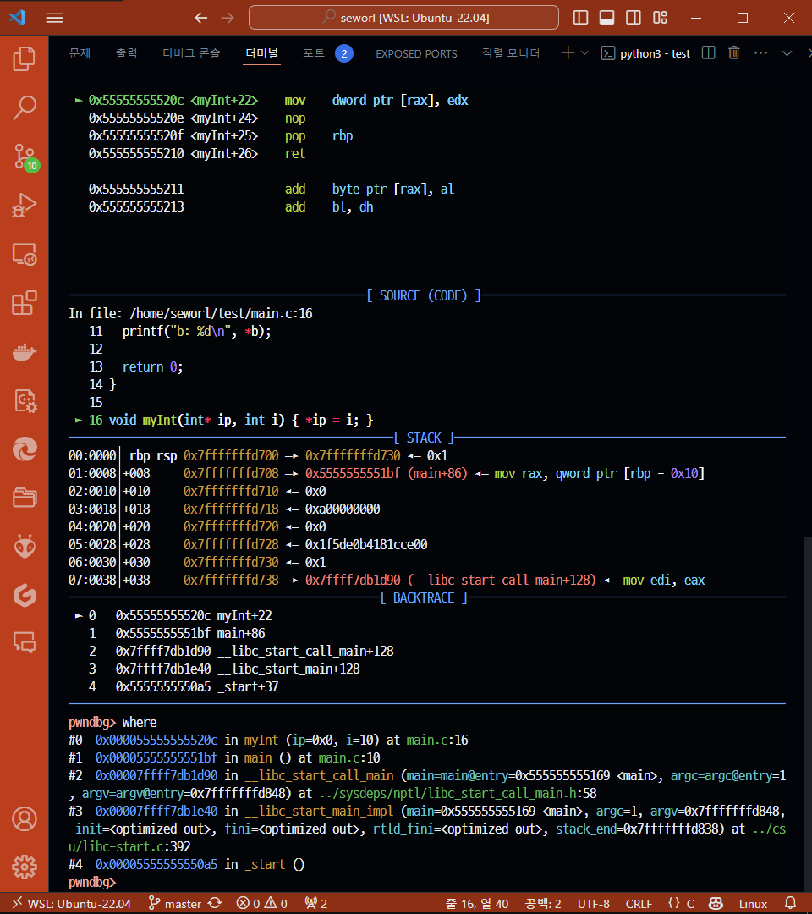
pwndbg> run
Starting program: /home/seworl/test/main
[Thread debugging using libthread_db enabled]
Using host libthread_db library "/lib/x86_64-linux-gnu/libthread_db.so.1".
a: 10
Program received signal SIGSEGV, Segmentation fault.
0x000055555555520c in myInt (ip=0x0, i=10) at main.c:16
16 void myInt(int* ip, int i) { *ip = i; }
LEGEND: STACK | HEAP | CODE | DATA | RWX | RODATA
──────────────────────────[ REGISTERS / show-flags off / show-compact-regs off ]──────────────────────────
RAX 0x0
RBX 0x0
*RCX 0x1
*RDX 0xa
RDI 0x0
*RSI 0xa
R8 0x0
*R9 0x7fffffffd5e6 ◂— 0xe0b4181cce003031 /* '10' */
R10 0x0
*R11 0x246
*R12 0x7fffffffd848 —▸ 0x7fffffffdb46 ◂— '/home/seworl/test/main'
*R13 0x555555555169 (main) ◂— endbr64
*R14 0x555555557db8 (__do_global_dtors_aux_fini_array_entry) —▸ 0x555555555120 (__do_global_dtors_aux) ◂— endbr64
*R15 0x7ffff7ffd040 (_rtld_global) —▸ 0x7ffff7ffe2e0 —▸ 0x555555554000 ◂— 0x10102464c457f
*RBP 0x7fffffffd700 —▸ 0x7fffffffd730 ◂— 0x1
*RSP 0x7fffffffd700 —▸ 0x7fffffffd730 ◂— 0x1
*RIP 0x55555555520c (myInt+22) ◂— mov dword ptr [rax], edx
───────────────────────────────────[ DISASM / x86-64 / set emulate on ]───────────────────────────────────
► 0x55555555520c <myInt+22> mov dword ptr [rax], edx
0x55555555520e <myInt+24> nop
0x55555555520f <myInt+25> pop rbp
0x555555555210 <myInt+26> ret
0x555555555211 add byte ptr [rax], al
0x555555555213 add bl, dh
────────────────────────────────────────────[ SOURCE (CODE) ]─────────────────────────────────────────────
In file: /home/seworl/test/main.c:16
11 printf("b: %d\n", *b);
12
13 return 0;
14 }
15
► 16 void myInt(int* ip, int i) { *ip = i; }
────────────────────────────────────────────────[ STACK ]─────────────────────────────────────────────────
00:0000│ rbp rsp 0x7fffffffd700 —▸ 0x7fffffffd730 ◂— 0x1
01:0008│+008 0x7fffffffd708 —▸ 0x5555555551bf (main+86) ◂— mov rax, qword ptr [rbp - 0x10]
02:0010│+010 0x7fffffffd710 ◂— 0x0
03:0018│+018 0x7fffffffd718 ◂— 0xa00000000
04:0020│+020 0x7fffffffd720 ◂— 0x0
05:0028│+028 0x7fffffffd728 ◂— 0x1f5de0b4181cce00
06:0030│+030 0x7fffffffd730 ◂— 0x1
07:0038│+038 0x7fffffffd738 —▸ 0x7ffff7db1d90 (__libc_start_call_main+128) ◂— mov edi, eax
──────────────────────────────────────────────[ BACKTRACE ]───────────────────────────────────────────────
► 0 0x55555555520c myInt+22
1 0x5555555551bf main+86
2 0x7ffff7db1d90 __libc_start_call_main+128
3 0x7ffff7db1e40 __libc_start_main+128
4 0x5555555550a5 _start+37
──────────────────────────────────────────────────────────────────────────────────────────────────────────
pwndbg> where
#0 0x000055555555520c in myInt (ip=0x0, i=10) at main.c:16
#1 0x00005555555551bf in main () at main.c:10
#2 0x00007ffff7db1d90 in __libc_start_call_main (main=main@entry=0x555555555169 <main>, argc=argc@entry=1, argv=argv@entry=0x7fffffffd848) at ../sysdeps/nptl/libc_start_call_main.h:58
#3 0x00007ffff7db1e40 in __libc_start_main_impl (main=0x555555555169 <main>, argc=1, argv=0x7fffffffd848, init=<optimized out>, fini=<optimized out>, rtld_fini=<optimized out>, stack_end=0x7fffffffd838) at ../csu/libc-start.c:392
#4 0x00005555555550a5 in _start ()
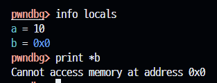
포인터 변수로 선언된 b의 주솟값이 정해지지 않았고, 그 상태에서 값을 저장하려 시도해서 발생한 오류이다.
포인터 변수인 b의 주소가 이번 오류의 분석에 필요한 건 아니라 b와 *b를 탐색하였다.
#include <stdio.h>
#include <stdlib.h>
void sort(int myData[], size_t len);
void swap(int *pa, int *pb);
enum { LEN = 5 };
int main() {
int myData[LEN] = {2, 1, 5, 3, 6};
sort(myData, LEN);
printf("sorted myData:\n");
for (int i = 0; i < LEN; ++i) {
printf("%d\n", myData[i]);
}
return 0;
}
void sort(int myData[], size_t len) {
for (int i = 0; i < (len - 1); ++i) {
for (int j = i + 1; j < len; ++j) {
if (myData[i] > myData[j]) {
swap(&myData[i], &myData[j]);
}
}
}
}
void swap(int *a, int *b) {
int *temp;
*temp = *a;
a = b;
b = temp;
}
코드를 컴파일한 뒤 그대로 실행했다.
gcc -o main -ggdb main.c && ./main
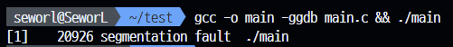
segmentation fault 오류이다.
구체적인 실행 방법은 1번 문제와 동일하므로 생략한다.
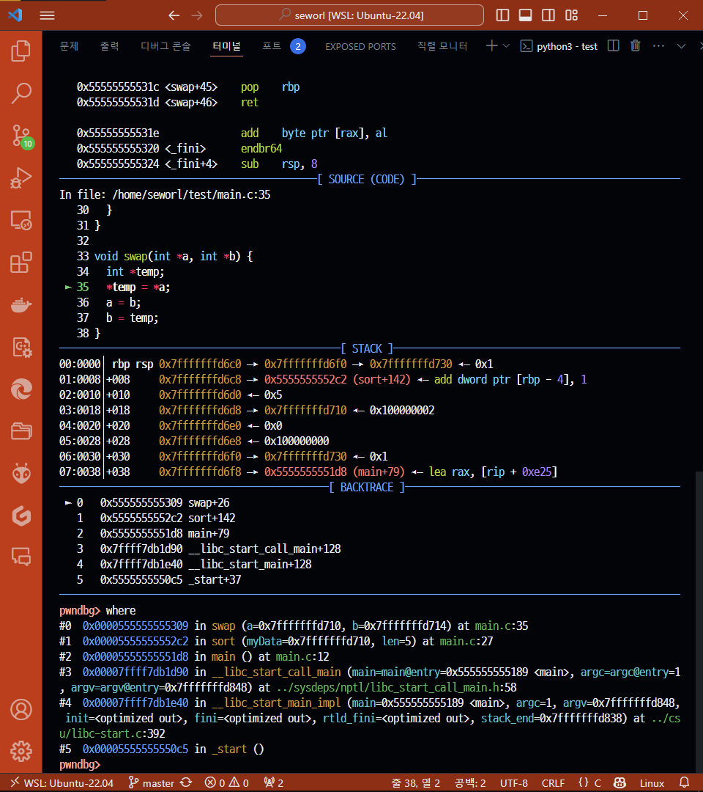
pwndbg> run
Starting program: /home/seworl/test/main
[Thread debugging using libthread_db enabled]
Using host libthread_db library "/lib/x86_64-linux-gnu/libthread_db.so.1".
Program received signal SIGSEGV, Segmentation fault.
0x0000555555555309 in swap (a=0x7fffffffd710, b=0x7fffffffd714) at main.c:35
35 *temp = *a;
LEGEND: STACK | HEAP | CODE | DATA | RWX | RODATA
──────────────────────────[ REGISTERS / show-flags off / show-compact-regs off ]──────────────────────────
RAX 0x0
RBX 0x0
RCX 0x0
*RDX 0x2
*RDI 0x7fffffffd710 ◂— 0x100000002
*RSI 0x7fffffffd714 ◂— 0x500000001
*R8 0x7ffff7fa3f10 (initial+16) ◂— 0x4
*R9 0x7ffff7fc9040 (_dl_fini) ◂— endbr64
*R10 0x7ffff7fc3908 ◂— 0xd00120000000e
*R11 0x7ffff7fde660 (_dl_audit_preinit) ◂— endbr64
*R12 0x7fffffffd848 —▸ 0x7fffffffdb46 ◂— '/home/seworl/test/main'
*R13 0x555555555189 (main) ◂— endbr64
*R14 0x555555557db0 (__do_global_dtors_aux_fini_array_entry) —▸ 0x555555555140 (__do_global_dtors_aux) ◂— endbr64
*R15 0x7ffff7ffd040 (_rtld_global) —▸ 0x7ffff7ffe2e0 —▸ 0x555555554000 ◂— 0x10102464c457f
*RBP 0x7fffffffd6c0 —▸ 0x7fffffffd6f0 —▸ 0x7fffffffd730 ◂— 0x1
*RSP 0x7fffffffd6c0 —▸ 0x7fffffffd6f0 —▸ 0x7fffffffd730 ◂— 0x1
*RIP 0x555555555309 (swap+26) ◂— mov dword ptr [rax], edx
───────────────────────────────────[ DISASM / x86-64 / set emulate on ]───────────────────────────────────
► 0x555555555309 <swap+26> mov dword ptr [rax], edx
0x55555555530b <swap+28> mov rax, qword ptr [rbp - 0x20]
0x55555555530f <swap+32> mov qword ptr [rbp - 0x18], rax
0x555555555313 <swap+36> mov rax, qword ptr [rbp - 8]
0x555555555317 <swap+40> mov qword ptr [rbp - 0x20], rax
0x55555555531b <swap+44> nop
0x55555555531c <swap+45> pop rbp
0x55555555531d <swap+46> ret
0x55555555531e add byte ptr [rax], al
0x555555555320 <_fini> endbr64
0x555555555324 <_fini+4> sub rsp, 8
────────────────────────────────────────────[ SOURCE (CODE) ]─────────────────────────────────────────────
In file: /home/seworl/test/main.c:35
30 }
31 }
32
33 void swap(int *a, int *b) {
34 int *temp;
► 35 *temp = *a;
36 a = b;
37 b = temp;
38 }
────────────────────────────────────────────────[ STACK ]─────────────────────────────────────────────────
00:0000│ rbp rsp 0x7fffffffd6c0 —▸ 0x7fffffffd6f0 —▸ 0x7fffffffd730 ◂— 0x1
01:0008│+008 0x7fffffffd6c8 —▸ 0x5555555552c2 (sort+142) ◂— add dword ptr [rbp - 4], 1
02:0010│+010 0x7fffffffd6d0 ◂— 0x5
03:0018│+018 0x7fffffffd6d8 —▸ 0x7fffffffd710 ◂— 0x100000002
04:0020│+020 0x7fffffffd6e0 ◂— 0x0
05:0028│+028 0x7fffffffd6e8 ◂— 0x100000000
06:0030│+030 0x7fffffffd6f0 —▸ 0x7fffffffd730 ◂— 0x1
07:0038│+038 0x7fffffffd6f8 —▸ 0x5555555551d8 (main+79) ◂— lea rax, [rip + 0xe25]
──────────────────────────────────────────────[ BACKTRACE ]───────────────────────────────────────────────
► 0 0x555555555309 swap+26
1 0x5555555552c2 sort+142
2 0x5555555551d8 main+79
3 0x7ffff7db1d90 __libc_start_call_main+128
4 0x7ffff7db1e40 __libc_start_main+128
5 0x5555555550c5 _start+37
──────────────────────────────────────────────────────────────────────────────────────────────────────────
pwndbg> where
#0 0x0000555555555309 in swap (a=0x7fffffffd710, b=0x7fffffffd714) at main.c:35
#1 0x00005555555552c2 in sort (myData=0x7fffffffd710, len=5) at main.c:27
#2 0x00005555555551d8 in main () at main.c:12
#3 0x00007ffff7db1d90 in __libc_start_call_main (main=main@entry=0x555555555189 <main>, argc=argc@entry=1, argv=argv@entry=0x7fffffffd848) at ../sysdeps/nptl/libc_start_call_main.h:58
#4 0x00007ffff7db1e40 in __libc_start_main_impl (main=0x555555555189 <main>, argc=1, argv=0x7fffffffd848, init=<optimized out>, fini=<optimized out>, rtld_fini=<optimized out>, stack_end=0x7fffffffd838) at ../csu/libc-start.c:392
#5 0x00005555555550c5 in _start ()
swap 함수의 내부에 breakpoint를 걸어주고 변수를 확인해준다.
b main.c:35
run
info args
info locals
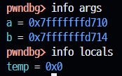
포인터 변수 temp가 초기화되지 않은 상태에서 값을 저장하려 시도해서 발생한 오류이다.
swap 함수를 다음과 같이 수정한다.
void swap(int *a, int *b) {
int temp;
temp = *a;
*a = *b;
*b = temp;
}
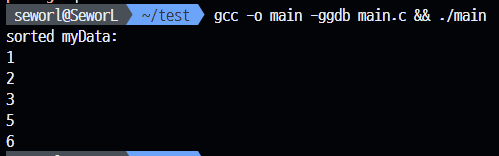